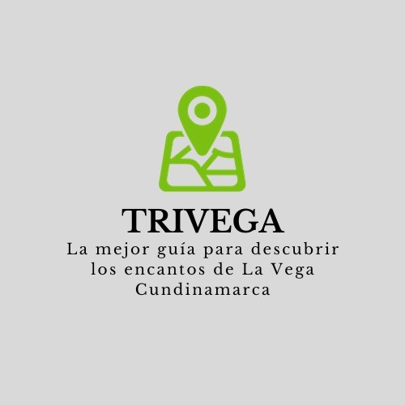
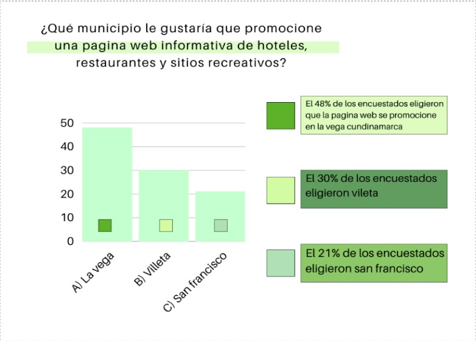
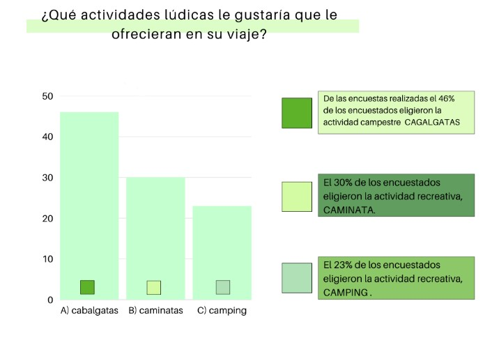
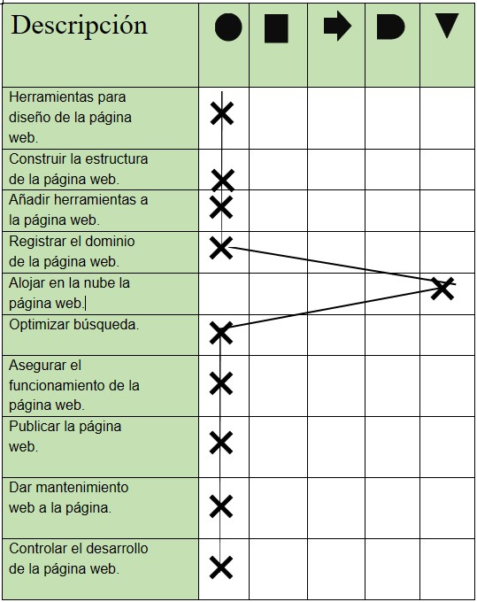
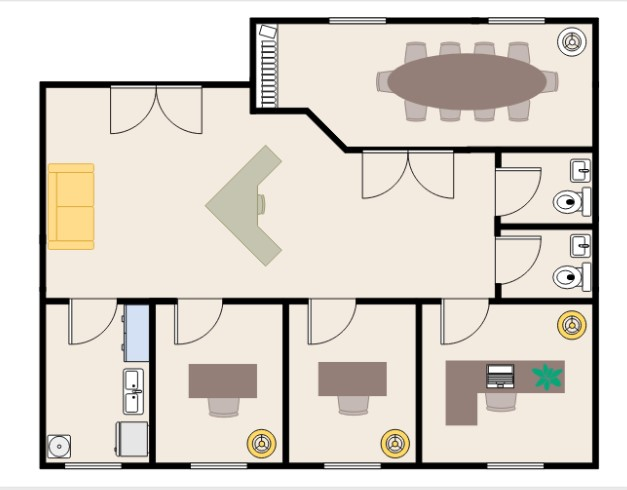
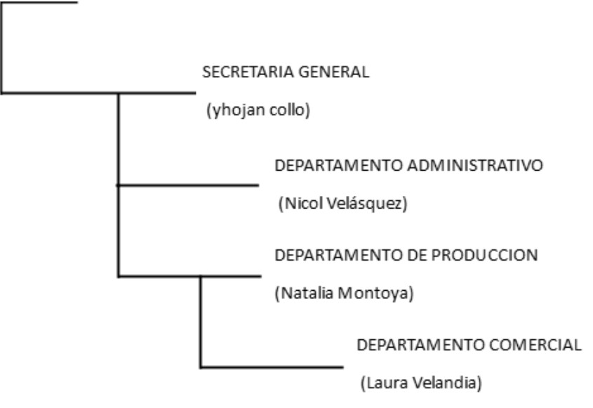
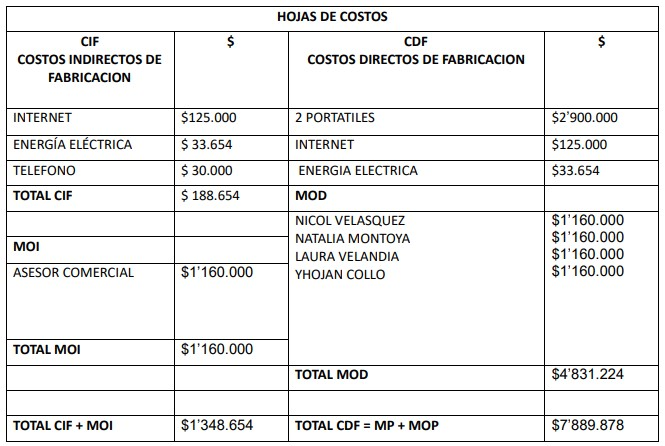

Esto es TRIVEGA

Por:
Nicol Velasquez, Sofia Velandia, Natalia Montoya y Yhojan Collo
La mejor guía para descubrir los encantos de La Vega Cundinamarca.
Idea de Negocio
Es una página que se enfoca en informar y en brindar un contacto directo con restaurantes, hoteles y actividades recreativas en La Vega
Análisis PESTEL
Factor Político
Las leyes de protección de datos, la privacidad en línea y la neutralidad de la red pueden tener un impacto en cómo se recopila, almacena y se presenta la información en la página web.
Factor Económico
La situación económica y el poder adquisitivo de los usuarios pueden afectar a la demanda de contenido, así como la viabilidad financiera de la página web.
Factor Social
En los cambios en las preferencias, así como las tendencias en el consumo de información pueden afectar a cómo se presenta el contenido y la forma en que se interactúa en la página web.
Factor Tecnológico
Los cambios en las tecnologías de desarrollo web, la evolución de los dispositivos móviles y las tendencias en el uso de aplicaciones y plataformas pueden afectar el diseño y la funcionalidad de la página web.
Factor Ecológico
Se pueden considerar aspectos relacionados con la huella de carbono de la página web, la eficiencia energética de los servidores y la sostenibilidad en el uso de recursos digitales.
Factor Legal
Las leyes de derechos de autor, las leyes de propiedad intelectual y las regulaciones de contenido pueden influir en lo que se puede publicar en la página web y cómo se puede utilizar la información.
Investigación de Mercados
Objetivo: Proveer a los usuarios una fuente confiable y actualizada de información sobre hoteles, restaurantes y actividades recreativas en un lugar con destino turístico.
Tamaño de la Muestra: se aplicaron 60 encuestas a diferentes personas de La comunidad de La Vega Cundinamarca
 Resultados Obtenidos: En los resultados obtenidos de las encuestas, se manifestó que el 85% de encuestados estarían interesados en que saliera a darse a conocer una página web donde se ofrece información segura y de buena calidad de hoteles, restaurantes y más que todo que se brinde la información necesaria de los sitios turísticos y recreativos que actualmente existen en La Vega Cundinamarca.
Estudio Técnico del Proyecto
Flujograma.
Distribución de la Planta
Etructura Organizacional
Propuesta del organigrama
| Cargo | Descripción | Salario | Jefe Inmediato |
|---|---|---|---|
| Jefe administrativo | Es la persona encargada .de detallar las políticas y reglas que rigen el avance y desempeño de una campaña. | $1.160.000 | Laura Velandia |
| Auxiliar contable | Persona encargada de acompañar, asistir, cooperar y llevar a cabo todas las órdenes dictadas por el profesional especializado a cargo de la empresa. | $1.160.000 | Natalia Montoya |
| Jefe de producción | Es la persona que supervisa y dirige todo el proceso de producción en una empresa. | $1.160.000 | Laura Velandia |
| Diseñador | Responsable de visualizar las ideas, su misión es responder con imágenes de buena calidad. | $1.160.000 | Yhojan Collo |
| Operario | Coordinan, planean y supervisan cada una de las impresiones. | $1.160.000 | Yhojan Collo |
| Acesor comercial | Principal responsable, dentro de una empresa de proporcionar información detallada o potenciales clientes ya fidelizados, para que se lleve a cabo la venta. | $1.160.000 | Nicol Velasquez |
Marketing MIX
Producto
El proyecto cubre y ayuda a desarrollar el turismo, y a crecer culturalmente. Queremos que el cliente adquiera información antes de viajar y tenga una mejor organización de su viaje. La pagina esta conformada por un menú con las distintas categorías como hoteles restaurantes y sitios recreativos, así mismo brindando información y fotografías de estos mismos.
Precio
Analizando materia prima e insumos y además realizar la página, el precio de nuestro servicio varía entre $215.000 y $315.000.
Plaza
Se distribuirá por medio de: Radio: se pueden transmitir anuncios y promociones en diferentes programas y horarios. Internet: se puede brindar información publicitaria a través de páginas web, blogs, redes sociales y plataformas de publicidad en línea. Carteleras y vallas publicitarias: se pueden colocar anuncios en lugares estratégicos como calles concurridas, centros comerciales y lugares públicos. La distribución de nuestro servicio estará con todos los métodos de seguridad, para las personas que deseen adquirir información de la página web.
Código CIIU:
7990 Otros servicios de reserva y actividades relacionadas
Esta clase incluye: La prestación de servicios de asistencia a los visitantes: - Suministro a los clientes de información sobre los viajes. - Actividades de guías de turismo. - Actividades de promoción turística.
Corresponde a la clasificación internacional de actividades económicas y se refiere a la "Otras actividades de servicios de apoyo a las empresas". En este caso, se utiliza este código para clasificar las actividades de prestación de servicios de asistencia a los visitantes, que incluyen:
Tipo de Sociedad (SRL)
Sociedad de responsabilidad limitada (SRL) reguladas por el artículo 353 del Código del Comercio, en la cual es aquella sociedad mercantil en las que los socios responden hasta el monto de sus aportes, es decir, es limitada porque los socios no responderán conjuntamente por la totalidad de la obligación contraída frente a acreedores o terceros, sino en relación al monto aportado por cada uno.
Nos caracteriza ya que es una sociedad de personas y como su nombre lo indica, la responsabilidad de los socios esta limitada al monto de sus aportes, de modo que no responden solidaria e ilimitadamente con su patrimonio.
Características
- Poca exigencia administrativa.
- Las responsabilidades de los socios están limitadas por su aportación.
Capital Social
- Dividido en acciones nominativas.
Ventajas
- Responsabilidad limitada: Los socios de una sociedad de responsabilidad limitada no son personalmente responsables por las deudas y obligaciones de la empresa. Solo están obligados a responder hasta el monto de su inversión.
- Flexibilidad en la gestión: Los socios pueden establecer acuerdos y reglas internas que se adapten a las necesidades y objetivos del negocio.
- Menos requisitos legales: En comparación con otras formas jurídicas, las sociedades de responsabilidad limitada suelen tener menos requisitos legales y contables.
Desventajas
- Disminución de control: A medida que más socios se unen a la empresa, la posibilidad de perder el control sobre las decisiones y dirección de la empresa aumenta. Cada socio tiene derecho a voto y esto puede generar conflictos o desacuerdos.
- Responsabilidad compartida: Si alguno de los socios incumple con sus obligaciones o comete acciones incorrectas, los otros socios también pueden ser responsables en cierta medida. Esto puede generar disputas internas y afectar la reputación y estabilidad de la empresa.
Hoja de Costos
Impacto Social y Económico
El impacto social y económico de la página web es positivo ya que facilita la comunicación y la interacción entre el visitante y el lugar a visitar, así mismo esta permitiendo el acceso a información. Trae con ello un desarrollo económico y turístico para La Vega, ya que se enfoca en promocionar a esta misma y con ello, crea un crecimiento económico en el sector turístico.
Impacto Ambiental
El impacto ambiental de la página web puede ayudar a reducir el uso de papel y otros recursos naturales, ya que permite el acceso y la gestión de información en formato digital, además de aprovechar nuestra página para llevar a cabo campañas y programas de concientización y conservación ambiental para el progreso cultural y natural de La Vega.
Impacto Personal y Familiar
El impacto personal y familiar de la página web es que puede marcar una diferencia significativa permitiendo a las personas acceder a información de una manera facil, sencilla y específica sobre La Vega Cundinamarca, esto podría tener un impacto positivo en la comunidad respecto y en el visitante respecto a la experiencia vivida, generando un sentimiento de satisfacción.